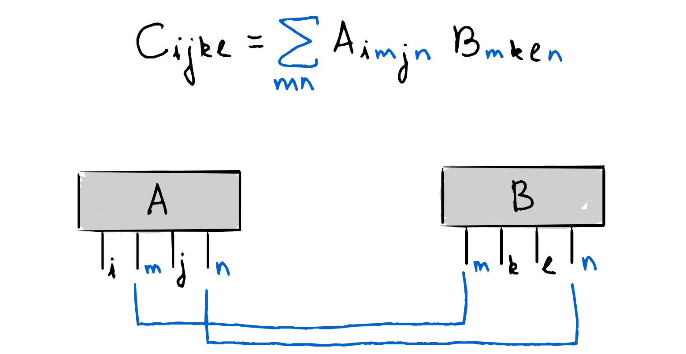
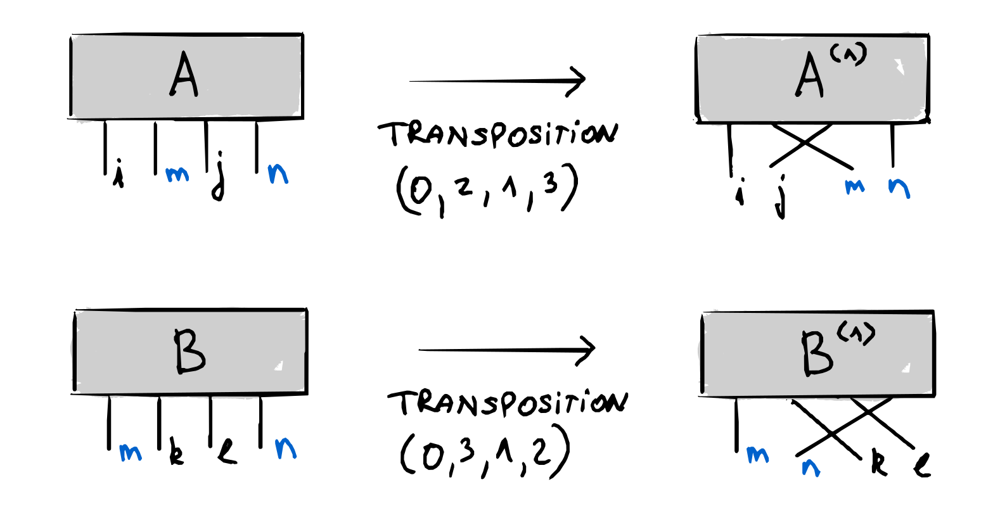
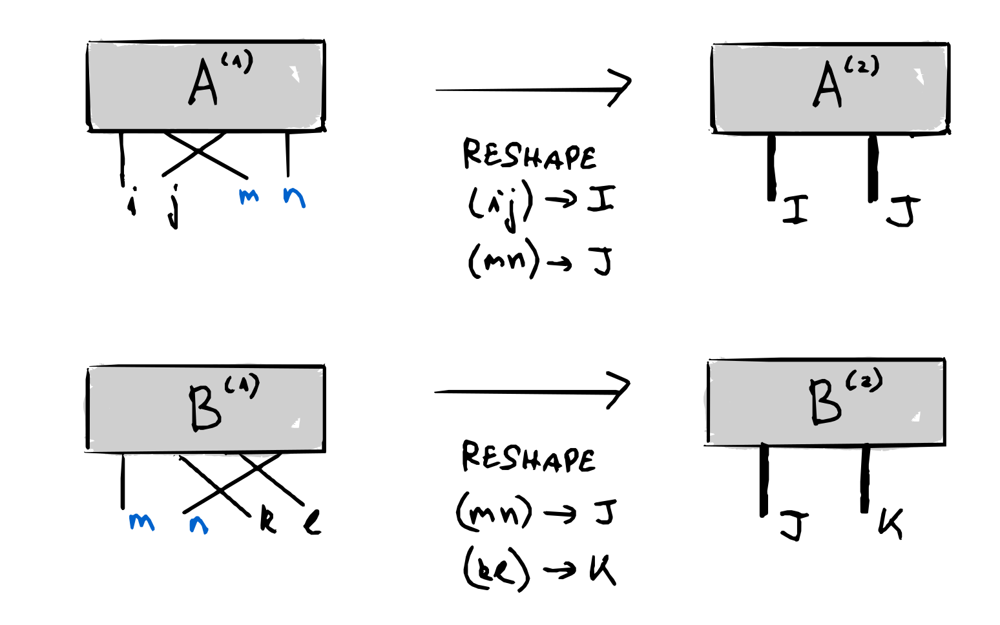
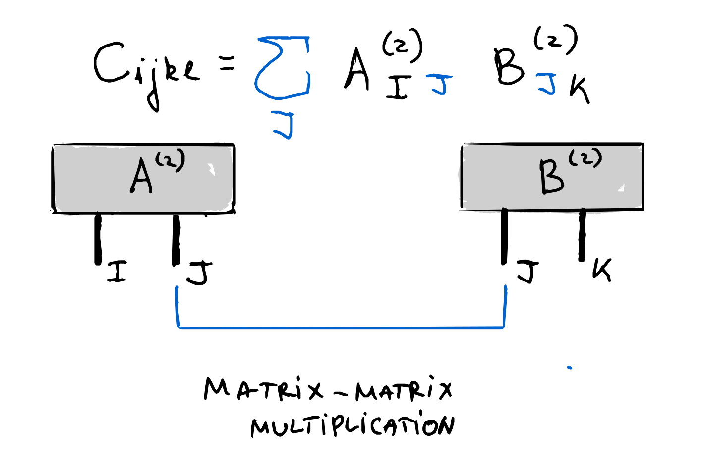
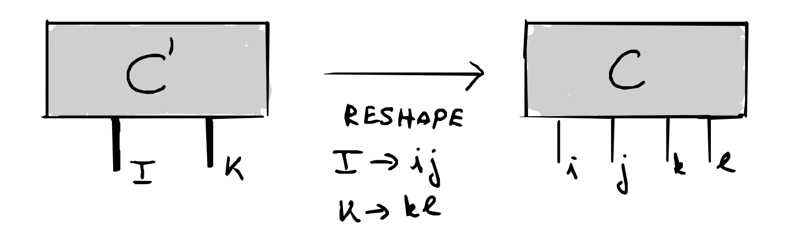
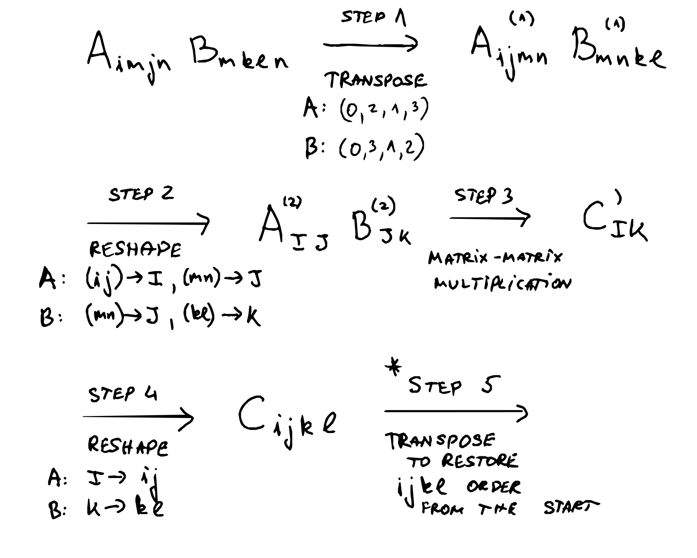

Lecture 2#
In this lecture we perform tensor network contraction explicity
Binary Tensor Contraction - Graphical#
Contraction algorithmically can be broken down to as series of steps. Lets look at the following example
{kind=link}
Step 0#
We first need to initialized the desired tensor. Using Python this is done as
Python code#
# import the library that allows us to deal with arrays efficiently
import numpy as np
d = 2
# create two random tensors
A_vec = np.random.rand(d,d,d,d)
B_vec = np.random.rand(d,d,d,d)
where we (as an example) create two random rank-4 tensors.
Step 1#
We first perform a transposition of the the two tensors A and B in the following way
{kind=link}
where we obtained new A and B that have elements shuffled. The main idea is that need to shuttle (transpose or permute) the target contraction indices for the matrix A to right, while for the B matrix we have to shuttle (transpose or permute) the contraction indices to left.
Python code#
# transpose the generate vectors
A_vec1 = A_vec.transpose(0,2,1,3)
B_vec1 = B_vec.transpose(0,3,1,2)
Step 2#
Afterwards we reshape the new A and B tensors in such a way
{kind=link}
Here the idea is that we separate the tensor into a part that we do not touch (indices I and K), and the ones over we operate (index J). By operating we imply performing matrix-matrix multiplication on the targeted indices J.
Python code#
# reshaping the tensors
A_vec2 = A_vec1.reshape(d**2,d**2)
B_vec2 = B_vec1.reshape(d**2,d**2)
Step 3#
After reshape the indices J have the same dimension and we can perform matrix-matrix multiplication over that index
{kind=link}
Python code#
# matrix-matrix multiplication
C_prim = A_vec2 @ B_vec2
Step 4#
We do a final reshape of the tensor to the desired number of legs as
{kind=link}
Python code#
# we need to keep wanted leg number of the tensor
C = C_prim.reshape(d,d,d,d)
print(C)
[[[[1.09725572 1.42488522]
[1.37927833 1.33462755]]
[[1.21799203 1.43758697]
[1.14475168 1.14318674]]]
[[[1.53658882 1.32085715]
[0.68369798 0.68026999]]
[[1.10235456 0.72067637]
[0.37726278 0.45510506]]]]
Comparison with direct evaluation#
We can perform the contraction in its full glory, i.e. over all the involved indices as
# define an empty 4-leg tensor
C_direct = np.zeros([d,d,d,d])
# loop over the indices
for i in range(0,d):
for j in range(0,d):
for k in range(0,d):
for l in range(0,d):
# perform the matrix-matrix multiplication explicitely
for m in range(0,d):
for n in range(0,d):
C_direct[i,j,k,l] = C_direct[i,j,k,l] + A_vec[i,m,j,n]*B_vec[m,k,l,n]
print(C_direct)
[[[[1.09725572 1.42488522]
[1.37927833 1.33462755]]
[[1.21799203 1.43758697]
[1.14475168 1.14318674]]]
[[[1.53658882 1.32085715]
[0.68369798 0.68026999]]
[[1.10235456 0.72067637]
[0.37726278 0.45510506]]]]
As we can see the outputs are the same! This implies that binary contraction is well defined and proper algorithmic procedure to perform tensor contraction.
Note
Exercise1: Using python function time check how the binary tensor network contraction scales with increasing number of local dimension d as compared to the direct approach. Use matplotlib to present the scaling plots.
Binary Tensor Contraction - Symbolic#
Sometimes it is easier to take care of the indices symbolically rather graphical and the whole process can be represented as
{kind=link}
The final step is sometimes necessary depending on what kind of contraction and what kind of tensors are used.
Note
Exercise2: Try to contract the following tensors A_{ijab} B_{kabl}. Verify that that in this case one has to perform an additional transposition (i.e. step 5) in order to obtain the correct result.